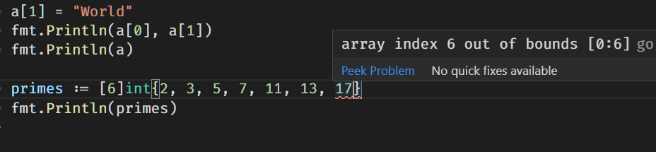
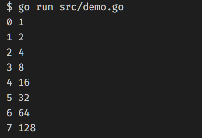

上一篇簡單快速的介紹 Go 最基礎最簡單的部分，這一篇要進入比較進階一點的地方，更多跟語言有關的筆記介紹如下
Pointers
Pointer 的作用是讓變數可以參考某一個變數的記憶體位置，預設值為 nil，語法是 *T 是指到 T 的位址(memory address)，& 是產生 pointer 的運算式
1 | ... |
Structs
可以利用 struct 來當作一個資料模型
1 | ... |
可以將 structs 視為一個 data object，當然就可以做到這件事情
1 | ... |
當 strcut 遇上 pointer 時，由於 * 寫起來很麻煩，所以當是一個 struct point 時， * 就可以不用寫
1 | ... |
如果還是要加 * 的話，還是可以加，寫法如下
1 | func main() { |
定義完 strcut 後，建立 struct 實體的方式除了直接一開始就先給值之外，還可以這樣子寫
1 | type Vertex struct { |
Arrays
陣列的操作，在任何程式語言都應該被好好熟悉並掌握，在 Go 裡面宣告陣列的方式比較不一樣，宣告方視為 [n]T is an array of n values of type T，範例
1 | func main(){ |
-
Go 在開發時，會立刻針對型別做檢查
-
如果陣列初始值長度大於宣告的，也會出現錯誤提示

Slices
設定方法 1
Array 是一個有固定長度的陣列，而 slices 是沒有固定長度的陣列，宣告使用方式為
1 | q := []int{2, 3, 5, 7, 11, 13} |
設定方法 2
slices 可透過這語法array[lowIndex: highIndex]，包含 lowIndex 但不包含 highIndex，從一個陣列中取出某一部分的陣列資料
1 | func main() { |
注意 非常重要，slice 出來的陣列，並不是複製體，而是參考到原本的來源陣列，這表示，改動 slice 出來的陣列，是會影響到原本的資料，測試程式碼如下
1 | func main() { |
當沒有設 lowIndex 或 highIndex 時，Go 內的預設值會是
lowIndex: 0highIndex: 陣列長度
1 | func main() { |
slices 資訊 (重要觀念)
如果想要得知目前 slice 長度跟複製的陣列來源長度，可以透過 len() 和 cap() 兩個方法取得
len(): slice 出來的陣列長度cap(): slice 來源的陣列長度
1 | func main() { |
預設值
而一個 slices 沒有設定初始值時，預設值就是 nil
使用 make 建立 slices
make 是 go 內建的方法之一，可以透過 make 來建立一個動態長度的陣列, slices. 語法是
make( []T, len, cap)
1 | func main(){ |
多維陣列
這應該就不用多解釋了
1 | board := [][]string{ |
擴增
透過 append( s []T, vs ...T) 的方式增加 slices 內的資料筆數，slices 會根據需要長大
1 | func main() { |
range
range 是一種 for loop slices 的用法，直接看程式碼比較快
1 | func main() { |

由圖片得知, range 會回傳目前所在的 index 和 value (複製本)
如果只想值，不想取得 index 時，第一個 index 可以用 _ 來代替
1 | for _, v := range pow { |
如果只是想要取得 index 的話，那可直接省略 , v 的部分
1 | for i := range pow { |
延伸閱讀
更多關於 slices 的資訊，可以閱讀這篇文章